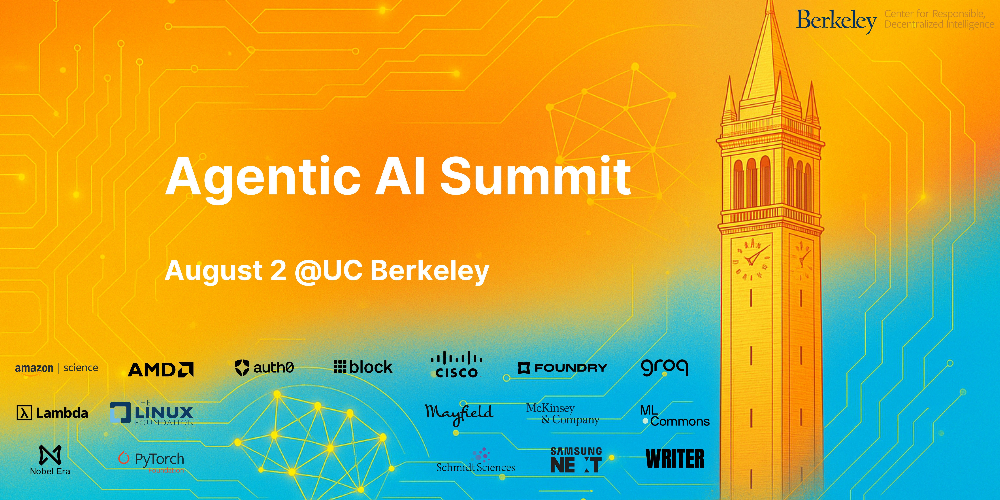
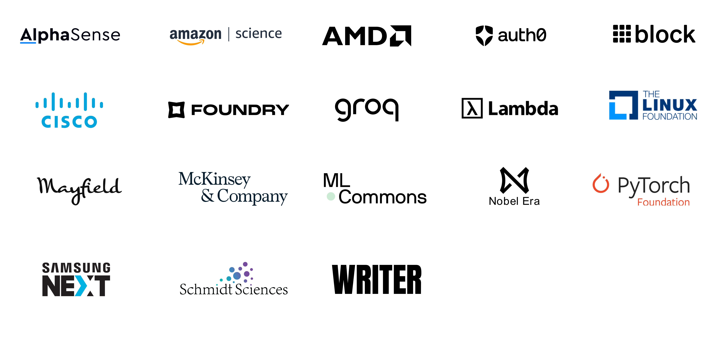

Sign up and learn more about the upcoming Agentic AI MOOC (Fall 2025) here!

Welcome to the Agentic AI Summit 2025, hosted by Berkeley Center for Responsible Decentralized Intelligence! Building on the momentum of our popular LLM Agents MOOC series—a rapidly growing global community of over 23,000 registered learners—we are excited to invite you to join us on August 2nd at the beautiful Berkeley campus. The summit will bring together visionary leaders from academia, pioneering entrepreneurs, experts from leading AI organizations, venture capitalists, and policymakers to explore, discuss, and collaboratively shape the exciting future of AI and Agentic AI. This summit aims not merely to showcase the latest advancements, but to build bridges across constituencies and catalyze meaningful conversations and partnerships. Together, we'll navigate the path toward intelligent agents that don't just automate tasks, but actively empower individuals, enrich societies, and amplify human potential—setting the stage for a robust, safe, and transformative AI-powered future.
Join over 1,500 in-person attendees and many thousands of livestream participants as we come together for this landmark event to shape the future of AI and AI Agents.
Date: August 2, 2025
Venue:
UC Berkeley Campus, Berkeley, CA
Ticketing Update
Tickets for the Agentic AI Summit are completely SOLD OUT.
There will be no onsite registration or ticket sales. Only registered attendees with a valid confirmation/ticket will be admitted. Thank you for your understanding!
🟢 Watch Summit Recordings
Main Stage
Workshops
Frontier Stage
Program Schedule
Main Stage
Workshops
Frontier Stage
9:15 AM
Opening Remarks
Dawn Song
Professor, UC Berkeley; Co-Director, Berkeley RDI
Session 1: Building Infrastructure for Agents
9:30 AM
Opening Keynote
Bill Dally
Chief Scientist, NVIDIA
Hardware for AI Agents
9:50 AM
Focus Talks
Ramine Roane
CVP of AI Product Management, AMD
Architecting the Future of Agentic AI at Scale
Chuan Li
Chief Science Officer, Lambda
Building AI Infrastructure as If Agents Were Human
Jared Quincy Davis
Founder/CEO, Foundry
Ember: the inference-time scaling architectures framework
10:10 AM
Panel: Building Infrastructure for Agents
Panelists: Bill Dally, Ramine Roane, Chuan Li, Jared Quincy Davis, Igor Arsovski (Chief Architect / Head of Hardware, Groq)
Moderator: Jared Quincy Davis
10:30 AM
Break
Session 2: Frameworks & Stacks for Agentic Systems
10:45 AM
Keynote
Ion Stoica
Co-Founder, Databricks & Anyscale; Professor of UC Berkeley
11:05 AM
Focus Talks
Matei Zaharia
Co-Founder/CTO, Databricks; Associate Professor, UC Berkeley
Reflective Optimization of Agents with GEPA and DSPy
Sherwin Wu
Head of Engineering, OpenAI API, OpenAI
The Year of Agents (tm)
Chi Wang
Senior Staff Research Scientist, Google DeepMind
Visionary Stacks for Agentic Systems: Insights and Innovations Ahead
Jerry Liu
Co-Founder/CEO, LlamaIndex
Context Engineering and MCP for Document Workflows
Matt White
Director, GM of AI at PyTorch/Linux Foundation
No Agents without Standards
Brad Axen
Tech Lead, AI & Data Platform, Block
Goose: an Open Source, Local AI Agent
11:40 AM
Panel: Frameworks & Stacks for Agentic Systems
Panelists: Ion Stoica, Matei Zaharia, Sherwin Wu, Chi Wang, Jerry Liu, Matt White, Brad Axen
Moderator: Chi Wang
12:05 PM
Lunch & Poster Sessions
Session 3: Foundations of Agents
1:00 PM
Keynote
Dawn Song
Professor, UC Berkeley; Co-Director, Berkeley RDI
Towards Building Safe and Secure Agentic AI
1:20 PM
Focus Talks
Ed Chi
VP of Research, Google DeepMind
Google Gemini Era: Bringing AI to Universal Assistant and the Real World
Jakub Pachocki
Chief Scientist, OpenAI
Automating Discovery
Sergey Levine
Co-Founder, Physical Intelligence; Associate Professor, UC Berkeley
Multi-Turn Reinforcement Learning for LLM Agents
1:50 PM
Panel: Foundations of Agents
Panelists: Dawn Song, Ed Chi, Jakub Pachocki, Sergey Levine
Moderator: Xinyun Chen (Staff Research Scientist, Google DeepMind)
Session 4: Next Generation Enterprise Agents
2:15 PM
Focus Talks
Burak Gokturk
VP, ML, Systems and Cloud AI Research, Google
AI Trends and the Moment for Agentic Systems
Arvind Jain
Founder/CEO, Glean
Transforming to an AI-Native Enterprise
May Habib
Co-Founder/CEO, Writer
From execution to supervision: scaling productivity with agents
Richard Socher
Founder/CEO, You.com
Search APIs for Accurate Answers and Agents
2:55 PM
Panel: Next Generation Enterprise Agents
Panelists: Burak Gokturk, Arvind Jain, May Habib, Richard Socher
Moderator: Sharon Goldman (AI Reporter, Fortune)
3:20 PM
Break
Session 5: Agents Transforming Industries
3:35 PM
Focus Talks
Michele Catasta
President, Replit
The breakout year of Coding Agents
Karthik Narasimhan
Head of Research, Sierra; Associate Professor, Princeton
Architecting an Open Agentic Future with Open Source and Open Standards by PyTorch/Linux Foundation
Matt White, Executive Director, PyTorch Foundation, GM of AI, Linux Foundation. – "Open Source and Open Standards: Foundations for an Agent-Driven Future"
Michael Goin, Principal Engineer, Redhat – "Accelerating Agents: Scalable and Efficient Inference with vLLM"
Jason Kim, Member of Technical Staff, Anthropic – "MCP as a Foundational Protocol for Agents"
Enhancing Evaluator Efficacy in Generative AI Red Teaming: Methodologies for Quality Assessment and Improvement
Zifan Wang
Head of SEAL, Scale AI
Agent Safety: From Red Teaming to Oversight
Victor Aranda
Sr. Principal Solutions Architect, Palo Alto Networks
What's Old Is New Again; Familiar Patterns Emerging in the Era of Agents
4:50 PM
Lightning Talks
5:45 PM
Networking & Reception
Featured Speakers
Sponsors

The Summit is hosted by Berkeley RDI,
a multi-disciplinary campus-wide center, focusing on advancing the science and technology of decentralization
and decentralized intelligence, to make it universally accessible and empower a responsible digital economy.